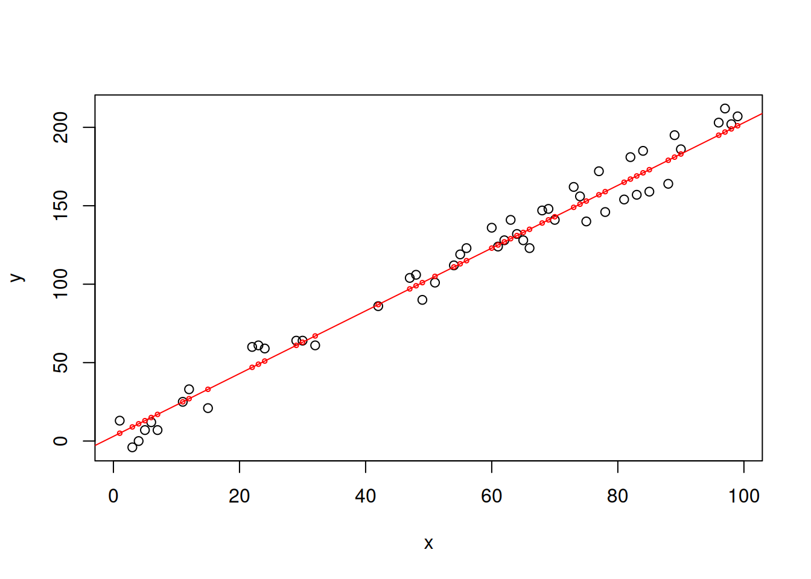
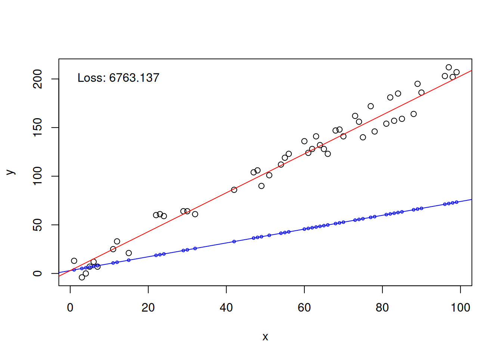
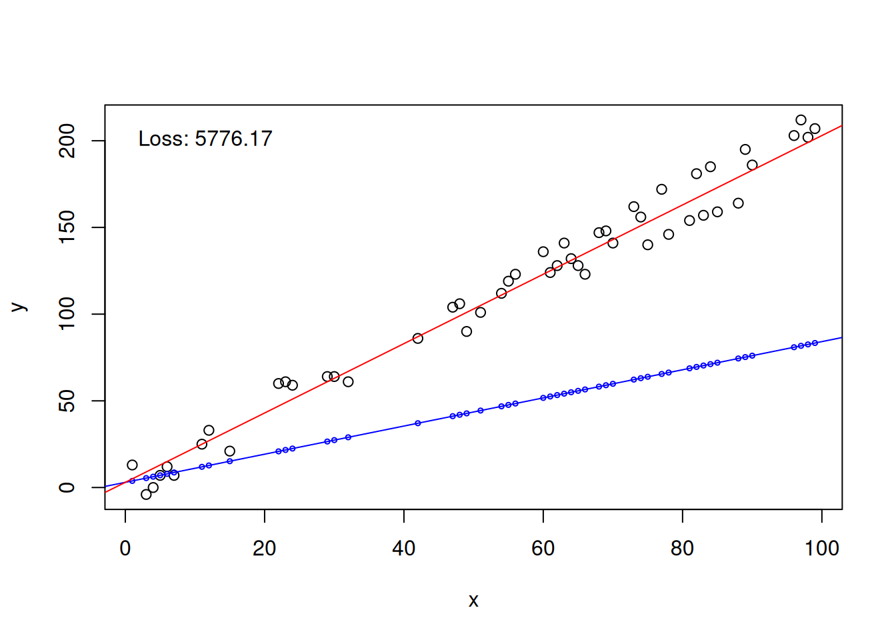
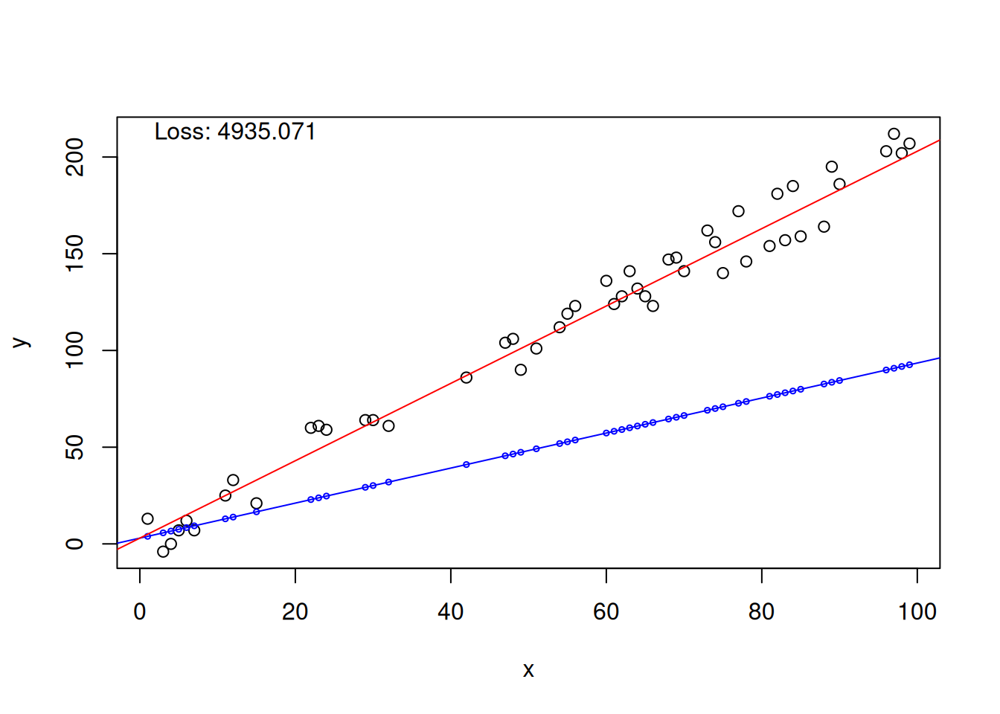
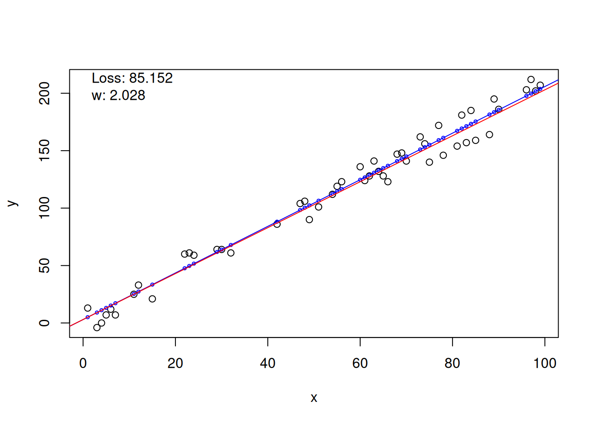
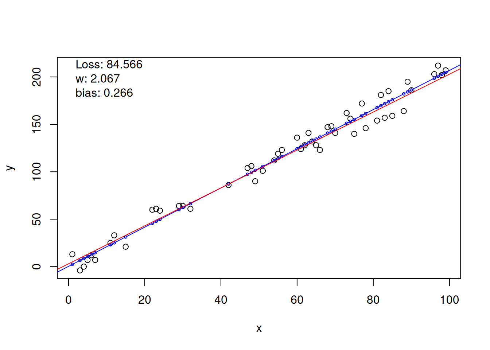
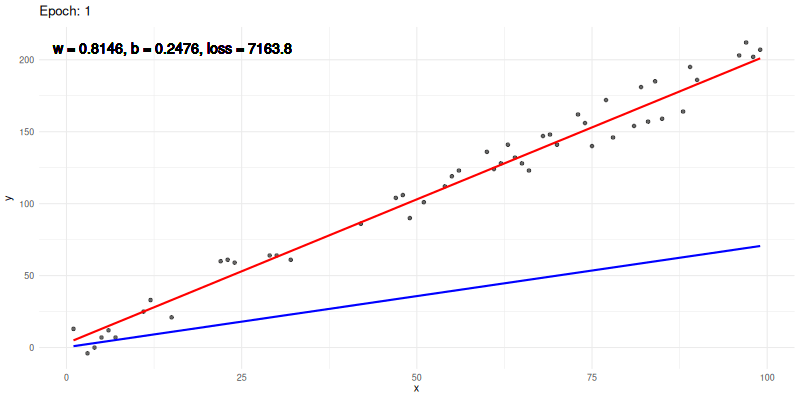

set.seed(13)
x <- sort(sample(1:100, size = 50))
x [1] 1 3 4 5 6 7 11 12 15 22 23 24 29 30 32 42 47 48 49 51 54 55 56 60 61
[26] 62 63 64 65 66 68 69 70 73 74 75 77 78 81 82 83 84 85 88 89 90 96 97 98 99Admir Junior
November 4, 2025
One of the principal concepts in machine learning is the gradient. It is used in many important algorithms, like Gradient Boosting Machines and Neural Networks. However, people that uses those algorithms often does not understand how it works. Here, I will try to introduce this amazing process with a very simple example. First, let’s simulate some data. I will generate a variable called “x” that is just 50 random numbers between 0 and 100:
[1] 1 3 4 5 6 7 11 12 15 22 23 24 29 30 32 42 47 48 49 51 54 55 56 60 61
[26] 62 63 64 65 66 68 69 70 73 74 75 77 78 81 82 83 84 85 88 89 90 96 97 98 99Now I will create a variable “y” that will follow a linear relationship with “x” determined by \(y = 2x +3\); but I will also introduce some random noise, that will prevent the data to be fitted exactly by the equation above; in other words, I will introduce what is called residuals (\(\varepsilon\)), to add some spice. So the equation that I will use to create “y” is \(y=2x+3+\epsilon\) (I will be back on this soon):
[1] 13 -4 0 7 12 7 25 33 21 60 61 59 64 64 61 86 104 106 90
[20] 101 112 119 123 136 124 128 141 132 128 123 147 148 141 162 156 140 172 146
[39] 154 181 157 185 159 164 195 186 203 212 202 207Nice. Let’s plot this:
Awesome. Pretty linear to make it simple, the way teachers like. Now, remember that I said that the equation for this is \(y = 2x +3 + \varepsilon\)? Well, I guess that if you is already familiar with linear models you recognized this equation. This because a linear model is defined as \(y = \beta_0x + \beta_1 + \varepsilon\). In this, \(\varepsilon\) still means the random error of the model, and \(\beta_0\) and \(\beta_1\) are the parameters. In this article, we will try to find a good-fitting model for this data using the gradient and backpropagation.
Now things start getting fun. See, if we fit a linear model to this data, it will look like this \[ \hat{y} = \beta_0x + \beta_1 \]
where \(\hat{y}\) is the predicted \(y\) value. The random error \(\varepsilon\) is not possible to introduce in the linear model. \(\beta_0\) is called “weight”, because it multiplies the \(x\) variable. \(\beta_1\) is called “bias”, because it adds a constant value to the predictions. Just for the record, \(\beta_0\) and \(\beta_1\) are also known as angular and linear coefficients or slope and intercept, respectively, depending on the context. Well, the best model we could fit for this data clearly is the equation I used to define \(y\), without the random error: \(y = 2x + 3\); with \(\beta_0 = 2\) and \(\beta_1 = 3\). Let’s assume this model, generate some predictions and plot it in a line:
y_hat <- (2 * x)+3 # making predictions of the model for x in [0,100]
plot(y ~ x)
points(y_hat ~ x, col = "red", cex = 0.5) # adding predictions for x
abline(a=3,b=2, col = "red") # adding the prediction line of the model
See? The red line is our linear model. The red dots are the predicted \(y\) values (\(\hat{y}\)). To evaluate this, we need a metric. I choose the Mean Squared Error (MSE, but here we will refer it as \(L\), for loss, also). The MSE is defined as
\[ L = MSE = {{1 \over n} \sum_{i=1}^n (y-\hat{y})^2} \]
where \(n\) is the number of samples. This can be implemented in R as a function, our loss function, what will be useful later on:
MSE <- function(y,y_hat) {
squared_error <- (y - y_hat)**2
return(mean(squared_error))
}
MSE(y, y_hat)[1] 88.3Nice. Now we know that, for a linear model with \(\beta_0 = 2; \beta_1 = 3\), \(MSE \approx 88.3\) its not bad.
In the previous sections we were constructing our foundations to now finally construct the gradient. First, let’s rewrite \(\beta_1\) to \(w\), as it stands for weight, and \(\beta_1\) for \(b\), as it will stand for bias, and then define the predction of our model as
\[ \hat{y} = w \cdot x + b \]
So, basically, the game here is to define random initialization values for \(w\) and \(b\), make predictions, calculate the loss (\(L\)), compute the gradient, update the parameters, and so on, until we find the best model. Each iteration of the process is called an epoch. The gradient here is just the information on how much and in which direction should the value of a parameter be updated. E.g., if in the gradient computation step we find that the gradient equals \(-0.35\), this means that increasing the parameter slightly would increase the loss, so we should move it in the opposite direction — that is, we should increase the parameter by \(0.35 \cdot \text{learning rate}\). The \(\text{learning rate}\), hereafter \(lr\), is the proportion of the gradient used, i.e., how fast the parameters will be changed between one epoch and the other. As you can guess, we need to compute one gradient for each parameter to be adjusted, but let’s start simple, adjusting just the weight \(w\). In this case, the gradient is defined as \(\frac{dL}{dw}\), i.e, the derivative of the loss \(L\), in our case the MSE, with respect to the weight \(w\). In short, how much the weight influences in the loss. If the reader is not familiarized with derivatives at all, I do recommend searching about it; in any case, just go with the flux and everything will be okay. You should have noticed by now, however, that \(w\) its not really a term of \(L\). However, \(w\) is a term of \(\hat{y}\), and \(\hat{y}\) is a term of \(L\). So, by the laws of calculus (in special the chain rule), we can say that
\[ \frac{dL}{dw} = \frac{dL}{d\hat{y}} \cdot \frac{d\hat{y}}{dw} \]
and I think that it is beautiful. Now, by the same set of rules, the derivative of the predicted \(y\) with respect to the weight \(w\) equals \(x\), i.e., \(\frac{d\hat{y}}{dw} =x\). And \(\frac{dL}{d\hat{y}}=-\frac{2}{n}(y-\hat{y})\).
Enough with derivatives, let’s do some coding work. First, let’s set a random value \(w\), the \(lr = 0.00001\), and get the first version of our model:
y_hat <- (w * x)+3 # our new model
plot(y ~ x)
points(y_hat ~ x, col = "blue", cex = 0.5) # adding predictions for x
abline(a=3,b=w, col = "blue") # the model's predictions line
abline(a=3,b=2, col = "red") # keep the old line as reference
loss <- MSE(y,y_hat)
text(x = 0, y=200,paste("Loss:",round(loss,3)), pos=4)
Horrendous. So wee need to compute the gradient:
[1] -10131.17and update the weight:
and update the model:
y_hat <- (w * x)+3 # our new model
plot(y ~ x)
points(y_hat ~ x, col = "blue", cex = 0.5) # adding predictions for x
abline(a=3,b=w, col = "blue") # the model's predictions line
abline(a=3,b=2, col = "red") # keep the old line as reference
loss <- MSE(y,y_hat)
text(x = 0, y=200,paste("Loss:",round(loss,3)), pos=4)
Okay… loss reduced. Let’s do it all again:
y_hat <- (w * x) + 3
dl_dyhat <- -2 * (y - y_hat)
dyhat_dw <- x
gradient <- mean(dl_dyhat * dyhat_dw)
w <- w - lr * gradient
y_hat <- (w * x) + 3
loss <- MSE(y, y_hat)
plot(y ~ x)
points(y_hat ~ x, col = "blue", cex = 0.5)
abline(a = 3, b = w, col = "blue") # nova linha
abline(a = 3, b = 2, col = "red") # modelo "ideal"
text(x = 0, y = max(y), paste("Loss:", round(loss, 3)), pos = 4)
Very nice. Loss reduced even more. As I said, we can do this many times, i.e., many epochs, and search for the best model. Here we will set 100 epochs. But let’s go over the first 10 to see somethings:
epochs <- 1:100
losses <- c() # this will be useful later
for (epoch in epochs[1:10]) {
y_hat <- (w * x) + 3
dl_dyhat <- -2 * (y - y_hat)
dyhat_dw <- x
gradient <- mean(dl_dyhat * dyhat_dw)
w <- w - lr * gradient
loss <- MSE(y, y_hat)
losses <- c(losses, loss)
print(paste("Epoch:",epoch,"| Loss:",loss,"| w:",w))
}[1] "Epoch: 1 | Loss: 4935.07135017847 | w: 0.991498528705445"
[1] "Epoch: 2 | Loss: 4218.28184732541 | w: 1.07120186677443"
[1] "Epoch: 3 | Loss: 3607.42958780821 | w: 1.14478000331282"
[1] "Epoch: 4 | Loss: 3086.85767447514 | w: 1.21270366005823"
[1] "Epoch: 5 | Loss: 2643.22320684554 | w: 1.27540738378275"
[1] "Epoch: 6 | Loss: 2265.15528610646 | w: 1.33329232633905"
[1] "Epoch: 7 | Loss: 1942.96356494536 | w: 1.38672881105989"
[1] "Epoch: 8 | Loss: 1668.3898719914 | w: 1.43605870192994"
[1] "Epoch: 9 | Loss: 1434.39654469334 | w: 1.48159759068662"
[1] "Epoch: 10 | Loss: 1234.98604534445 | w: 1.52363681584236"Now its possible to see how the loss reduces every epoch as \(w\) get closes to 2, our ideal value. However, we need to go further, so let’s go for 90 more epochs.
We can visualize the training process with a graph of loss against each epoch:
This type of plot is called “convergence plot”. It indicates that around epoch 40 the model converged, i.e., minimized the loss, and could not improve further. That is, we found the model we were seeking. Awesome, isn’t it? Well, let’s visualize this model:
plot(y ~ x)
points(y_hat ~ x, col = "blue", cex = 0.5)
abline(a = 3, b = w, col = "blue") # nova linha
abline(a = 3, b = 2, col = "red") # modelo "ideal"
text(x = 0, y = max(y), paste("Loss:", round(loss, 3)), pos = 4)
text(x = 0, y = max(y)-15, paste("w:", round(w, 3)), pos = 4)
Very nice. We ended up with a model \(\hat{y}=2.028x +3\). Very close of our ideal \(\hat{y}=2x+3\).
Wow, we got so far, but let’s go even further. Now, we will also apply the gradient to find the bias \(b\). For this, we will introduce the gradient to adjust \(b\), i.e., the derivative of \(L\) with respect to \(b\), or \(\frac{dL}{db}\), which can be resolved in the same way as the gradient of \(w\), with the chain rule. This time I skip the math, let’s go straight to the code:
set.seed(13)
# Inicialização aleatória dos parâmetros
w <- runif(1)
b <- runif(1)
lr <- 0.00001
# Para guardar o histórico da perda
losses <- c()
epochs <- 1:100
# Training loop
for (epoch in epochs) {
# Predictions
y_hat <- (w * x) + b
# Gradients
dl_dyhat <- -2 * (y - y_hat) # ∂L/∂ŷ
dyhat_dw <- x # ∂ŷ/∂w
dyhat_db <- 1 # ∂ŷ/∂b
gradient_w <- mean(dl_dyhat * dyhat_dw)
gradient_b <- mean(dl_dyhat * dyhat_db)
# Parameters update
w <- w - lr * gradient_w
b <- b - lr * gradient_b
# Compute the loss
loss <- MSE(y, y_hat)
losses <- c(losses, loss)
}Let’s see the convergence:
And visualize the final model:
plot(y ~ x)
points(y_hat ~ x, col = "blue", cex = 0.5)
abline(a = b, b = w, col = "blue") # nova linha
abline(a = 3, b = 2, col = "red") # modelo "ideal"
text(x = 0, y = max(y), paste("Loss:", round(loss, 3)), pos = 4)
text(x = 0, y = max(y)-15, paste("w:", round(w, 3)), pos = 4)
text(x = 0, y = max(y)-30, paste("bias:", round(b, 3)), pos = 4)
Now you may be thinking “okay, but 0.266 is nowhere near to 3… how it is a good bias estimation?”. And it is true. We could adopt other approaches to better estimate \(b\), but for now it can provide us a good model. So, let’s call it a day and move on. Thus, the equation of our final model is \(\hat{y_i}=wx_i+b=2.067x+0.266\). Pretty neat, huh?
# The grand finale
We are pretty much done here, but I want to construct an animation of the full process just for better visualization… and because it is truly beautiful:
library(ggplot2)
library(gganimate)
set.seed(13)
# Inicialização dos parâmetros
w <- runif(1)
b <- runif(1)
lr <- 0.00001
# Guardar histórico da animação
history <- data.frame()
# Loop de treinamento
epochs <- 1:100
for (epoch in epochs) {
y_hat <- w * x + b
# Gradiente
dl_dyhat <- -2 * (y - y_hat)
gradient_w <- mean(dl_dyhat * x)
gradient_b <- mean(dl_dyhat)
# Atualização dos parâmetros
w <- w - lr * gradient_w
b <- b - lr * gradient_b
# Loss
loss <- mean((y - y_hat)^2)
# Registro do histórico (cada x, y, y_hat por epoch)
step_df <- data.frame(
x = x,
y = y,
y_hat = y_hat,
epoch = epoch,
w = w,
b = b,
loss = loss
)
history <- rbind(history, step_df)
}
# Pegar valores máximos para posicionar os textos
max_y <- max(y)
# Construção do gráfico animado
p <- ggplot(history, aes(x = x, y = y)) +
geom_point(color = "black", alpha = 0.6) +
geom_line(aes(y = y_hat), color = "blue", size = 1) +
geom_line(aes(y = (2*x)+3), color = "red", size = 1) +
geom_text(aes(
x = 10,
y = max_y,
label = paste0("w = ", round(w, 4),
", b = ", round(b, 4),
", loss = ", round(loss, 1))
), hjust = 0.35, vjust = 1, size = 5, color = "black") +
labs(
title = 'Epoch: {closest_state}',
x = 'x', y = 'y'
) +
theme_minimal() +
transition_states(epoch, transition_length = 1, state_length = 1, wrap = FALSE) +
ease_aes('linear')
# Renderizar
# anim <- animate(p, fps = 10, nframes = length(epochs), width = 800, height = 400,
# renderer = gifski_renderer("regressao_animada.gif"))
That’s all!!
Thank you.